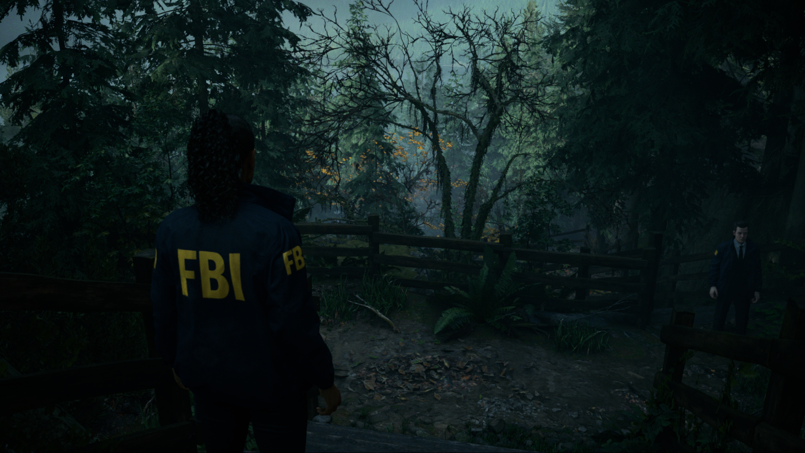
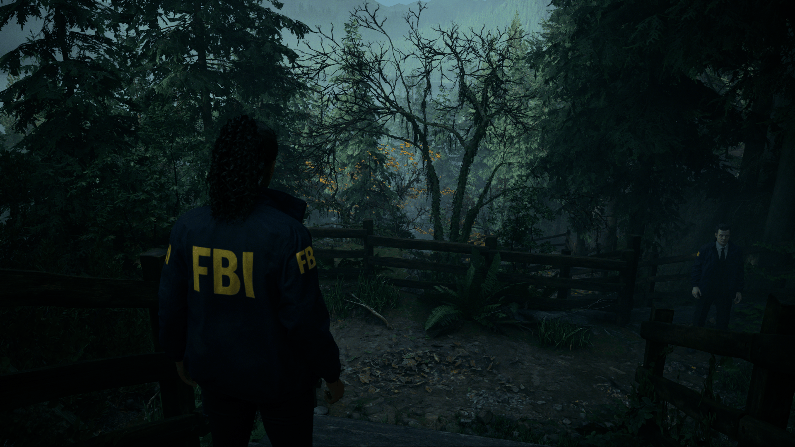
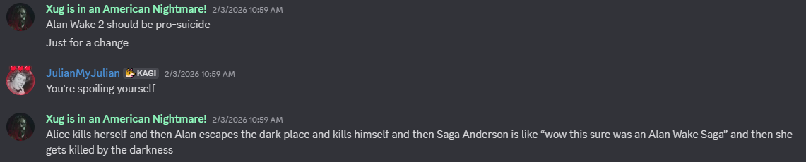
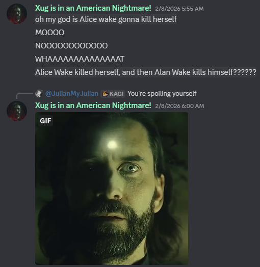
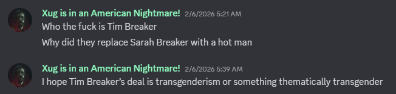
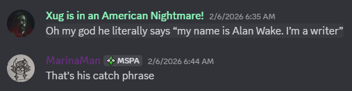
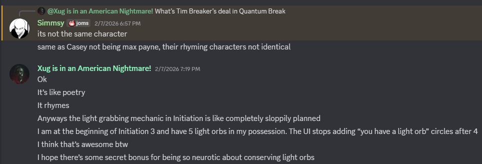
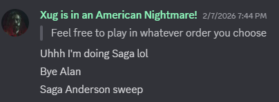
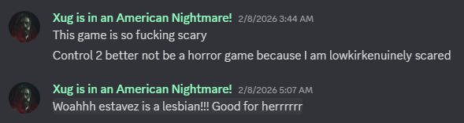

ARPG Homework Pt. v — Alan Wake 2
It's great and also, by god, it's fucking scary. Like I was straight-spooked. It overuses jumpscares, but man, it is a horror game.
I'll start off by talking about my experience, which itself starts off terribly. The game's onboarding SUCKS! It's only on EGS on PC, which is a horrendous marketplace, and then when you finish downloading it with EGS' glacial download speeds, the very first thing you see is a massive advertisement for buying the Deluxe Edition and the DLC. And I already bought those, so fuck off! Then you start the game and you're a fat naked guy in a very dark lake and the game runs at like 15 fps and is a blurry mess and you have to fiddle with your settings for like twenty minutes in this dim dim dimmmmm scene to make it look alright and playable while a, in my opinion, unattractive guy's hog is in front of you. Not ideal!


There's an on-by-default effect called "Lens Distortion" that makes the game look 10x worse. 10,000 years torture chamber Remedy
Anyways then you play the game for a bit and EGS' horrible achievement pop-up appears and makes a super loud noise during the intro and you wanna kill Tim Sweeney with your bare hands because you can only disable it temporarily and have to re-check "do not disturb" every play session. And then the game gets going and it's actually pretty good.
For the CHARACTERS, I adoreeeeeeee Saga Anderson and Alan Wake, they are wonderful protagonists and I don't even hate Alan anymore. But the supporting cast especially shines here, Alice Wake and Mr. Door are emotional showstoppers and their performances by Christina Cole and David Harewood are fucking phenomenal. Melanie Liburd and Ilkka Villi are also great, god I love Ilkka so much. Matthew Poretta's voice work is amazing as always and he shows up as Dr. Caspar Darling like twice and man I looooooove Dr. Darling. Shawn Ashmore plays Tim Breaker, who I was HOPING was transgender Sarah Breaker but sadly is not that. Uh, but he's awesome and is a very warm presence in the story who I loved occasionally seeing.
In terms of GAMEPLAY it's like actually quite alright. Nothing groundbreaking, nothing amazing, nothing really terrible. It's fine, which is really good for a Remedy game, jeez louise. The DualSense support is pretty good actually, I'm glad I own one, and there's gyro aiming and it feels great. The puzzle design is mediocre which is roughhhhhhhhh because the game's kindaaaa simple. Idk. But it's fine. In terms of structure the game hits a slump during Saga's arc at the nursing home/wellness center but it picks back up so whatever.
The STORY is amazing for a video game which means it's actually kind of good by regular standards. The whole game does still feel slightly held back by that Remedy thing of never fully committing to ideas, but it's least prevalent here compared to, like, fucking Control, which I love but holy shit they were sooooo tame with the worldbuilding and implications of everything. Here they do kind of go for it and it works real good. It starts off intriguing and then gets noticeably less intriguing (that wellness center arc, mannnnnnn :/) and then gets wayyyyyyy good. Ending spoilers, but holy kamoly. I talked about how Alan Wake 1 is anti-suicide but is bad at that to the point of being pro-suicide, and I joked that Alan Wake 2 should be pro-suicide to compensate...


When the ending of a game is kind of the joke ending you made up before knowing anything about it it's a revelatory experience. It feels euphoric.
I've been thinking a lot about the game since I beat it. It really impacted me, you know. The Dark Place under Cauldron Lake is so illustrative I cannot stop referencing it. And I love Alan and everyone in this game and I want more from them. I don't think I mentioned Sam Lake's characters, both Alex Caseys, uh but they're alright. They're good supports. I'd be fine if they showed up again, but I'd preferrrr Alice or Tim or Mr. Door or Saga or Alan.
Oh yeah, there's fucking DLC. I played the first episode of Night Springs and it was not good, I think Rose is awesome but it was very disappointing because it kind of just become combatslop, and for some reason the DualSense adaptive triggers weren't kicking in so it felt especially hollow and not very good. Bummer. And then The Lake House is quite great, Control's setting is, like, greatest-of-all-time territory in video games, and this was a beautiful supplement. And the paint monsters are maybe the scariest thing ever? Jury's out.
Assorted live thoughts:





I AM gonna play Quantum Break and Max Payne 1 and 2, I've decided. Once they're on sale. Probably not Max Payne 3, fuck Rockstar.
2/20/26 12:46:47 AM CST